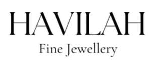

Trade Mark Journal No.2025/019 9 May 2025
UK00004194397 25 April 2025 (14,35)
Mark 1
Havilah Fine Jewellery
Mark 2

- Class 14
- Precious metals and their alloys; jewellery, precious and semi-precious stones; synthetic stones; jewellery stones; jewellery, including imitation jewellery and plastic jewellery; imitation jewellery ornaments; fashion jewellery; jewellery made from gold; jewellery made from silver; jewellery incorporating pearls; ivory jewellery; sterling silver jewellery; enamelled jewellery; costume jewellery; shoe jewellery; hat jewellery; facial jewellery; jewellery in precious metals; jewellery in semi-precious metals; jewellery in non-precious metals; pewter jewellery; precious jewellery; cloisonné jewellery; jewellery for personal adornment; jewellery incorporating diamonds; personal jewellery; body jewellery; fake jewellery; items and products of jewellery; necklaces; choker necklaces; jewellery brooches; pendants; bracelets; jewellery ornaments; amulets being jewellery; pearls being jewellery; jade; trinkets; lockets; charms for jewellery; rings being jewellery; earrings; wristlets; crucifixes as jewellery; agate as jewellery; pins being jewellery; medallions; jewellery caskets; amber pendants being jewellery; jewellery boxes; cabochons for making jewellery; beads for making jewellery; jewellery for pets; clips of silver and gold; jewellery chain; jewellery chain of precious metal for anklets; clasps for jewellery; jewellery stickpins; jewellery cases; ring bands; bangles; tiaras; horological and chronometric instruments.
- Class 35
- Advertising; business management, organization and administration; office functions; retail services, including those services offered via e-commerce, in-person, online, via mobile devices and social media, connected with the sale of precious metals and their alloys, jewellery, precious and semi-precious stones, synthetic stones, jewellery stones; retail services, including those services offered via e-commerce, in-person, online, via mobile devices and social media, connected with the sale of jewellery, including imitation jewellery and plastic jewellery, imitation jewellery ornaments, fashion jewellery, jewellery made from gold, jewellery made from silver, jewellery incorporating pearls, ivory jewellery, sterling silver jewellery, enamelled jewellery, costume jewellery, shoe jewellery, hat jewellery, facial jewellery, jewellery in precious metals, jewellery in semi-precious metals, jewellery in non-precious metals, pewter jewellery, precious jewellery, cloisonné jewellery, jewellery for personal adornment, jewellery incorporating diamonds, personal jewellery, body jewellery, fake jewellery, items and products of jewellery, necklaces, choker necklaces, jewellery brooches, pendants, bracelets, jewellery ornaments, amulets being jewellery, pearls being jewellery, jade, trinkets, lockets, charms for jewellery, rings being jewellery, earrings, wristlets, crucifixes as jewellery, agate as jewellery, pins being jewellery, medallions, jewellery caskets, amber pendants being jewellery, jewellery boxes, cabochons for making jewellery, beads for making jewellery, jewellery for pets, clips of silver and gold, jewellery chain, jewellery chain of precious metal for anklets, clasps for jewellery, jewellery stickpins, jewellery cases, ring bands, bangles, tiaras, horological and chronometric instruments.
Chioma Alade
Representative: Trade Mark Wizards Limited